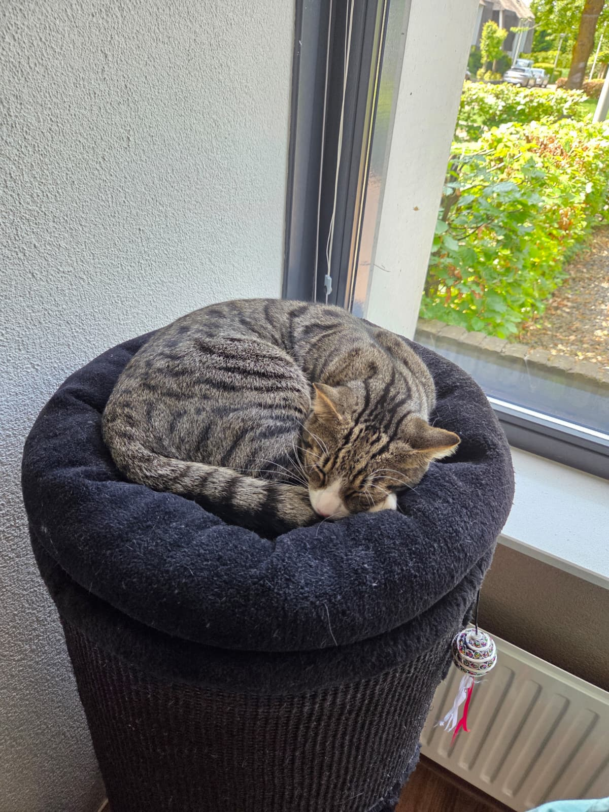

Wist je dat...? ✨
Druk op de knop voor een leuk weetje! 👇
Dit is Lio 😻



Laat Lio geluidjes maken:
Kattenquiz ❓
Spelletjes 🎮
Kies een spelletje:
Spel: Kat naar de Viskom 🎲
Jij bent 😺, Lio is 🐈⬛. Wie is het eerst bij de viskom? 🐟
Gooi de dobbelsteen om te beginnen!
Memory met Lio 🃏
Draai twee kaartjes om en zoek de paren!
Kattenwoordzoeker 🔎
Sleep over de letters om de kattenwoorden te vinden. Ze kunnen alle kanten op staan: vooruit, achteruit, omhoog, omlaag en schuin!
Zoek deze woorden:
Kattenpuzzel 🧩
De 30 stukjes van Lio liggen door elkaar. Tik op een stukje en dan op een ander stukje (of sleep het erheen) om ze te verwisselen. Een groen randje betekent dat het stukje goed ligt!